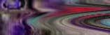

PDQ: When I was listening I began to see a pattern developing.
First we have the ancients drawing on cave walls as a way to appease the
spirits, we can only assume that it had some spiritual function in relation
to a very important part of their survival, the hunt. And we move on to
Michaelangelo and his work which was created as a tribute to reveal the
glory and power of God. Now as we have become more secular the realists
try to duplicate human vision, making the illusion as close to reality as
possible. Our latest efforts are to create life, in a sense taking over
what god does, take his place.
KER: I suppose in the core of our being we have the desire to procreate
and to create life. It's something that we can't remove from the fundamental
aspect of all life, are to recreate and I suppose it does make sense that
we have a desire not only to do that in terms of creating children, but
also in terms of creating artworks that move towards mimesis or move toward
some kind of mimicking of living systems.
PDQ: Do you think there is some inherent drive or desire in human beings
to replace God? What is it about humans that drives them to want to duplicate
what exists?
KER: I think humans, and I actually believe that all living systems are
what we call emergent systems. We know that DNA arises from RNA and we know
that RNA arises from simpler molecules. Molecules themselves have a form
of intelligence which is inherent to their interaction with other molecules,
in the way they combine, and if your given billions and billions of years,
and they estimate that life has existed for about 3.6 billion years on earth
and the earth is maybe about 4.5 billion years, that molecules will organize
into something higher than those higher molecules or RNA will organize into
DNA which has organized into cellular systems which have joined together.
Margulis has this theory about non-oxygen breathing prokaryote cells ingesting
oxygen breathing prokaryote breathing cells which became the ancestor of
mitochondria which are able to convert oxygen to chemical energy packets.
Later, she speculates that these prokaryote ingested and organism with a
whip-like tail that allowed mobility. From there you have cells working
together to create higher systems. I actually believe that this attempt
to create artificial life and even all of the machines that surround our
lives, the wires, the pipes and everything is just a universe that is tending
toward complexity. I think intelligent systems tend toward complexity. I
think that's why we're getting smarter (laughs) I believe we're getting
smarter. Now the machines are ingesting the machines. Intellegence is imbeded
everywhere.